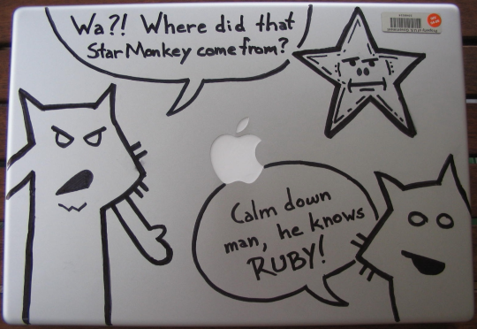

Permo-Foxed #
Bil Kleb’s gone and permo-foxed his PowerBook. I can now check this off my list of things I’ve always wanted not-me to do.

I’m just glad it’s not Calvin peeing on the Python logo. Bring it to RubyConf, Bil, and I’ll fill in some colors for ya. Anyone else out there catching the defacement-of-valuable-personal-property bug??
MJS
Judging from the ugly asset tag in the upper-right corner it’s probably company owned!
andy
more sharpie commitment beauty http://flickr.com/photos/yacht/19504595/
Geoff
Andy, I didn’t see a single fox on your PowerBook. No chunky bacon for you!
And when are the t-shirts, stickers, and tattoo stencils going to be ready?
MenTaLguY
Stencils?
We’re all just waiting for the first real tattoos to start showing up, man.
You know it’s coming.
Phil
I can see a new session coming on at RubyConf: The Lucky Stiff Powerbook Personalization session.
“Now to draw Fox Tall, put your marker at a 45degree angle and start about mid-way up on the left-hand side… No, not like that, like this… Yeah, now you’re catch’n on”
_why cult follower
I want; yet I can’t even draw straight line using a ruler.
Perhaps it’s time to build a plotter.
_why cult follower
On a unrelated note; when is the techno ringtone featuring the Foxes due?
Bil
I just realized that I forgot small fox’s chin. The horror!
MenTaLguY
No, Bil, you did good.
Neither fox has a visible chin. Fox Tall just happens to have a goatee (which even _why has forgotten on rare occasion).
Geoff
I have to say, as a powerbook owner myself, this is quite the extreme measure. I just chalk it up to the fact that Bil is new to the whole mac thing. All in all, nice work!
Bil
Truth be known, I’ve really just come full circle: Besides a TI Silent 700 terminal into Bell Labs, I bought an Apple II after delivering a whole bunch of newspapers through northern Illinois winters and then my-neighgors-who-had-everything got one of the first Macs.
big daddy
cool.
Bil
All things must come to an end: the laptop went in for repair, and the foxes are gone. (The LCD was flaky.)
Comments are closed for this entry.